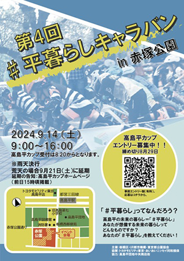
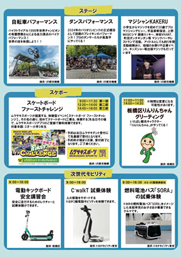
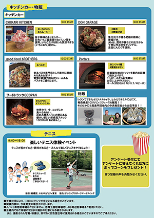

| 大会名 | 高島平カップ2024 |
|---|---|
| 開催日 | 2024年9月14日(土) |
| 開催場所 | 東京都立赤塚公園 （〒175-0082 東京都板橋区高島平３丁目１） https://www.tokyo-park.or.jp/park/format/index005.html |
| 時 間 | 8:20～16:30（予定） |
| カテゴリー |
・2才の部 ・3才の部 ・4才の部 ・5～6才の部（未就学児） （令和6年9月14日時点の年齢が対象となります） |
| 定 員 | 全カテゴリー合計で400名／1日 |
| 募集期間 | 2024年7月8日（月）～ 8月29日（木） ※各種目定員になり次第締め切ります。 ※定員に達した種目のキャンセル待ちはございません。 ※全ての種目において当日エントリーはございません。 |
| エントリー料金 | 3,000円(傷害保険料含む) |
| 駐車場について | なし ※大会専用の駐車場は設けておりません。 ※お車でお越しの場合は、赤塚公園有料駐車場(28台)、又は周辺の有料駐車場をご利用ください。 ※周辺駐車場の台数に限りがありますので、できる限り公共交通機関をご利用いただきますようお願いします。 |
| アクセス | ・都営地下鉄三田線「高島平」下車 徒歩10分 ・東武東上線「成増駅北口」から国際興業バス（高01または増17系統・高島平操車場行き）「赤塚公園」下車すぐ |
| 雨天の場合 | 雨天決行としますが、荒天の場合は中止となる場合もございます。 雨天の際は、カッパや大きめのタオルなどのご用意をお薦めいたします。 ※延期の場合は9月21日(土)に順延 |
| 備 考 | ランニングバイク乗車時ヘルメット及び手指を保護するグローブ（手袋）は着用必須です。 お持ち忘れの無きようお願いいたします。 |
| 車両レギュレーション | ・出場できるランニングバイクの種類は問いませんが、12インチタイヤを装着したバイクのみとなります。 ・ペダルが装着されている車体での出場はできません。 ・コースの内外に関わらず必ずヘルメットを着用してください。 ・手指を保護するグローブ（普通の手袋、軍手、第二関節から指先が空いたタイプのものでも可）を着用してください。 ・車両の安全性に問題があると運営委員が判断する場合は、出走をお断りする可能性があります。 ・詳しい車両レギュレーションについてはこちら |
| コースについて | 路面：アスファルト 【コース全長】 2才：80m 3才：120m 4才：180m以上 5才～6才：180m以上 ※当日の会場の広さによって多少距離が変わります |
| テントについて | テント設営 可 ペグ不可 |
| レース形式について | 特設コースにおいてトーナメント形式で予選・敗者復活戦・準決勝・決勝を行います。 ※レース形式は最終的なエントリー数で変更になる場合がございます。 ※レース形式の詳細は当日会場にて掲出します |
| 表 彰 | 入 賞 各クラス1位から3位までの順位を確定し表彰を行います。 高島平賞 参加したすべての子どもたちの"一生懸命"に敬意を払い、「高島平賞(表彰状)」と「オリジナルメダル」を贈ります。 |
| スタート付き添いについて | 整列及びスタート時選手の後方に保護者が1名付き添うことが可能です。 |
| ゼッケンについて | ゼッケンプレートを事前に配布します。前面に1枚装着し明確に識別できるようにしてください。 |
| タイムテーブルについて | 2才の部： 8:20～8:50 受付、 8:30～9:00 試走・ルール説明、 9:00～10:05 レース 3才の部： 9:00～10:10 受付、 10:05～10:20 試走・ルール説明、 10:20～12:20 レース 4才の部： 11:50～12:50 受付、 12:30～13:00 試走・ルール説明、 13:00～14:30 レース 5才・6才の部： 14:30～14:35 受付、 14:30～14:45 試走・ルール説明、 14:45～16:00 レース ※タイムテーブルは最終エントリー数によって前後することがあります。予めご了承ください。 ※上記タイムスケジュールは目安であり、最終的な詳細タイムテーブルはエントリー締切後に送付する参加案内メールをご確認ください。 |
| 主 催 | 高島平カップ実行員会 |
↓クリックで大きくなります


